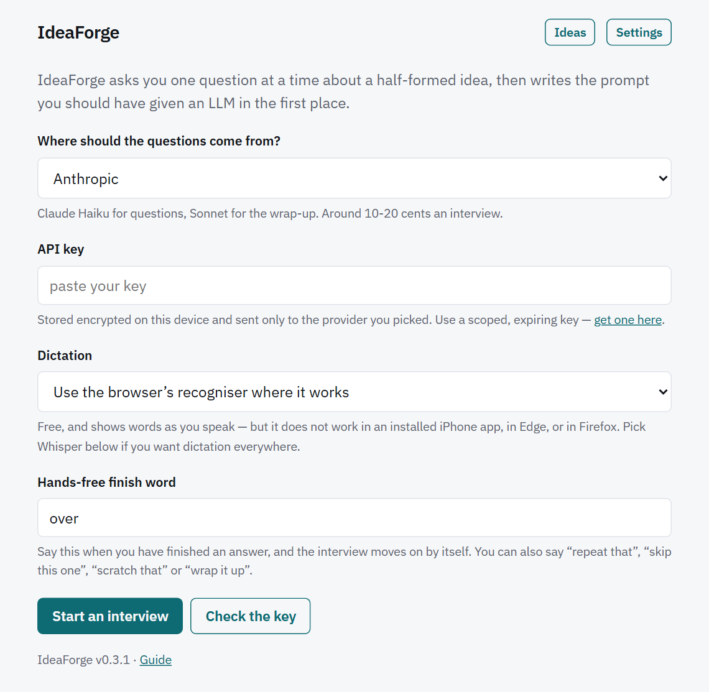

Phone installation and spoken answers
Take the interview with you.
IdeaForge can be installed as a home-screen web app, accept one dictated answer at a time, or run a continuous hands-free loop that reads each question aloud and listens for a finish word.

Install on Android
- Open IdeaForge in Chrome on the Android phone.
- If the setup screen offers Install IdeaForge, select it and accept the browser prompt.
- If no in-app install button appears, open Chrome’s menu and choose Install app or Add to Home screen.
- Launch IdeaForge from its home-screen icon.
Chrome’s browser recogniser is the preferred no-key dictation path when its behavioural probe succeeds. Android may end long recognition sessions even when continuous listening was requested; IdeaForge restarts the recogniser and joins the pieces so one answer is not silently truncated.
Install on iPhone or iPad
- Open IdeaForge in Safari.
- Tap Share, then choose Add to Home Screen.
- Leave Open as Web App enabled if Safari offers it.
- Tap Add, then launch IdeaForge from the new icon.
What installation does offline
The service worker caches the application shell for a later launch. If the provider is unavailable, the interview can continue from the built-in question bank instead of failing to open. Provider requests are never placed in that cache, and a refined prompt still needs a working provider at wrap-up.
Back up the Ideas library before removing site data or moving devices. An installed icon does not turn local browser storage into cloud storage. See Ideas library for transfer and recovery.
Choose a provider a phone can reach
On a phone, localhost and 127.0.0.1 refer to that phone.
They do not reach Ollama or LM Studio running on a laptop elsewhere on the network.
IdeaForge also refuses arbitrary LAN addresses rather than opening a route that
would weaken its provider allowlist.
A hosted provider is therefore the normal phone setup. If you need a local model, follow the browser, CORS, and local-network constraints in Local models and Docker. Safari cannot make an insecure HTTP request from a hosted HTTPS page to a loopback model server; running the app locally as well is the practical route.
Voice support matrix
| Environment | Browser recogniser | Hosted transcription | Hands-free |
|---|---|---|---|
| Android Chrome, tab or installed | Used when the live probe succeeds; long answers are joined across recogniser restarts. | Available with a supported microphone, recorder, and transcription key. | Shown when voice input and speech synthesis are both available. |
| iPhone or iPad in Safari | Offered only if the recogniser proves it is alive in that context. | Available with a transcription key and microphone permission. | Conditional on the selected input path and speech synthesis. |
| Installed iPhone web app | Do not rely on it; the known silent recogniser is treated as unavailable. | The supported dictation route: choose Groq Whisper or OpenAI. | Available when hosted transcription and speech synthesis initialise successfully. |
| Edge or Firefox | The current app treats known dead or network-failing recognisers as unavailable. | Fallback is available where microphone recording is supported. | Conditional; the checkbox stays hidden if either input or speech output is missing. |
| Any supported browser, keyboard only | Not used. | Not used. | Not available, but the full typed interview remains available. |
The app probes behaviour rather than trusting the presence of a speech API. It requires the recogniser to emit evidence that it started; otherwise it selects the configured recorder-and-transcription fallback or withholds voice controls.
Configure dictation
- Open Settings.
- Under Dictation, choose the browser recogniser, Groq Whisper, OpenAI, or keyboard only.
- If the transcription provider differs from the question provider, enter its key in the separate transcription field. When the same supported provider supplies both, IdeaForge reuses that provider key.
-
Choose an uncommon Hands-free finish word. The default is
over
; the app warns when a very short or common word is likely to cut an answer off. - Start or resume the interview and allow microphone access when the browser asks.
Dictate one answer
- Select Answer out loud.
- Speak your answer. Live words appear when the browser recogniser supplies them.
- Select Stop listening when you are finished.
- Review and edit the transcript in the answer box.
- Select Send.
A manual microphone tap takes control away from hands-free mode. The transcript is not submitted automatically, so you can correct names or technical terms first. Dictated answers are marked in the exported transcript.
Run a hands-free interview
The hands-free checkbox appears only when IdeaForge has a working voice-input path and the browser can speak text. Once enabled, the loop reads the bridge and question aloud, listens, submits the answer, and continues without waiting for a tap. Suggestion chips are not read aloud.
- Enable Hands-free — read each question aloud and listen for the answer.
- Wait until the question has finished playing before speaking.
- Say your answer naturally; a pause does not finish it.
- End the answer with the configured finish word, for example
over
. - Listen for the next question or a spoken wrap-up offer.
Spoken commands
| Say | Result |
|---|---|
repeat that |
Reads the current question again without recording an answer. |
skip this one |
Records the turn as skipped and moves to the next question. |
scratch that |
Discards the current, not-yet-submitted capture and listens again. |
wrap it up |
Finishes once the interview has enough recorded answers; very early requests are refused. |
Commands must be the whole utterance. A sentence such as
I’d skip this one if I could
remains an answer. The finish word is
terminal-only, so we went over budget
does not end a response unless the
configured word is actually at the end.
Spoken wrap-up
When coverage, exhaustion, or a turn limit suggests stopping, IdeaForge asks
whether it should write the idea up. Say a clear yes to wrap, or say
keep going
. Unclear replies are not treated as consent. After synthesis, the
app reads a successful refined prompt aloud in manageable chunks and leaves the
Markdown on screen. If synthesis fails, it says that the answers are saved and the
degraded document is available on screen.
Permissions and browser controls
| Permission or capability | Why it is needed | If unavailable |
|---|---|---|
| Microphone | Captures dictated answers for browser recognition or hosted transcription. | Voice is withheld or an explicit denial error is shown; typing remains available and hands-free stands down. |
| Speech synthesis | Reads questions, recovery prompts, and the final result in hands-free mode. | Single-answer dictation may still work, but the hands-free checkbox is hidden. |
| Local-network access in Chrome | A hosted page may need browser approval before it can contact a loopback model server. | Use a hosted provider or run the app locally with the model server. |
| Local storage | Keeps sessions, encrypted credentials, and device preferences. | IdeaForge reports failed session saves; export before closing the tab. |
With recorder-based transcription, IdeaForge keeps the microphone stream for the current interview after it is first opened, avoiding a new permission prompt for every answer. It releases the stream when the voice controller is torn down, such as when you leave the interview or complete the wrap-up.
What hands-free does when it cannot hear you
- After the first empty capture, it prompts you to try again without repeating the whole question.
- After another miss, it reads the question again.
- After a further miss, it skips that question and continues rather than waiting for a tap.
- After repeated questions fail, it announces that hands-free has switched off.
- A denied or unavailable microphone is treated as fatal and stops hands-free immediately.
- A recogniser that goes silent mid-answer settles with what it heard instead of hanging for ever.